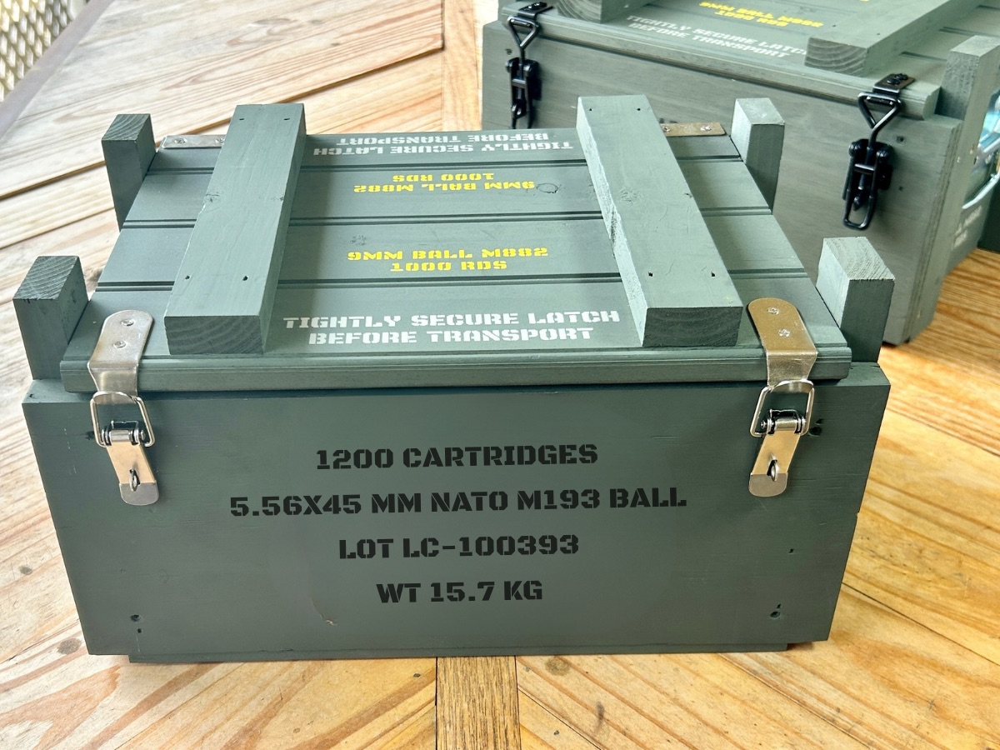
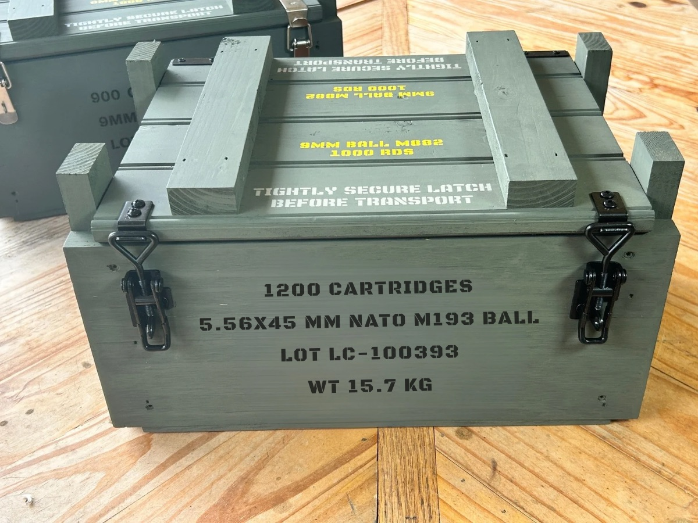

Ammo Box for AR-15 (5.56 / .223)


Built for AR-15 Owners
- Perfect for 5.56 ammo storage
- Ideal for .223 rounds
- Range-ready design
- Strong, stackable construction
Best Ammo Box Options for AR-15
Why This Page Exists (SEO Advantage)
Most websites don’t create dedicated pages for specific searches like “ammo box for AR-15.” This page is built specifically to match that search — making it more relevant and more likely to rank higher on Google.
Why Choose a Wooden Ammo Box?
Wooden ammo boxes provide a rugged, customizable alternative to metal cans. They’re built to last and designed for shooters who want both function and style.
FAQ
- What ammo fits in an AR-15 ammo box?
5.56 and .223 ammunition are the most common. - Are wooden ammo boxes good for storage?
Yes — they provide strong, organized storage. - Can I customize my AR-15 ammo box?
Yes, Freedom Crate Co. offers custom options.